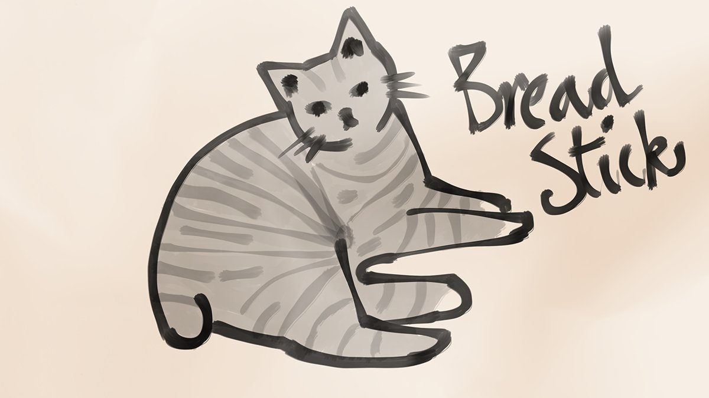

I’ve been wondering if I should send my drawings to Nene. I’ll ask her about it, but what do you think? Remember that letters cost money and take a long time.
Good idea 75%
Not a good idea 25%
4th of Eleasis, 1494 DR 11:06 PM
I like how the new Fleet Feet schedule has a day off in the middle.
5th of Eleasis, 1494 DR 12:35 PM
I should wash my clothes. It’s been over a month since I washed my clothes.
5th of Eleasis, 1494 DR 12:37 PM
Would you like to see my drawings?
I can send some to you.
I will look at your drawings.
Have you been practicing? You said you liked to draw.
OK most people said that sending drawings to Nene is a good idea. I asked her and she agreed, but what picture should I draw and send?
Colour self portrait 9.1%
DETAILED BREADSTICK 72.7%
Picture of her 18.2%
5th of Eleasis, 1494 DR 11:03 PM
Congratulations on picking detailed Breadstick! How did you know it was the one I wanted? Anyway I already drew it and here is the detailed picture of Breadstick that I will send to Nene.

6th of Eleasis, 1494 DR 10:41 PM
@kthexsis You can meet Breadstick. Breadstick is a good judge of character and only likes nice people like me and J and Kiki so you will get along great probably.
7th of Eleasis, 1494 DR 10:51 PM
Yes I have been practicing.
I draw lots of different things and I’m getting better all the time.
That’s very good.
I look forward to seeing your drawing.
Should I send the picture right away or draw more?
Send it now 28.6%
Draw more 71.4%
6th of Eleasis, 1494 DR 11:02 PM
I’m glad I visited the music place by the docks. I’ve heard what music can be if you are very good so now I want to practice even more.
7th of Eleasis, 1494 DR 10:19 PM
I will draw some more pictures and send them all to Nene at once. Good decision making everyone!
7th of Eleasis, 1494 DR 10:44 PM
What’s the best time of day?
Morning 0%
Evening 28.6%
Night 57.1%
Day 14.3%
7th of Eleasis, 1494 DR 11:00 PM
Very many people chose night as their favourite time of day. Night is good because you can see the stars. Good choice.
8th of Eleasis, 1494 DR 10:31 PM
Should I tell Nene more things about me or ask more things about her?
8th of Eleasis, 1494 DR 11:05 PM
I finally made it to the end of a tenday of work. Even with the break in the middle it’s a long journey.
9th of Eleasis, 1494 DR 9:54 AM
I think maybe I got sick from someone at work. My throat is sore.
9th of Eleasis, 1494 DR 11:28 AM
OK I will ask more about Nene. Maybe I will ask about her job.
9th of Eleasis, 1494 DR 10:31 PM
I want to know more about your job.
What do you do exactly, does it pay well, and is it fun?
I sent the message. She’ll probably answer in the morning.
9th of Eleasis, 1494 DR 11:07 PM
You know I think I am probably making enough money that I don’t need to carry dangerous packages anymore. Do you agree?
Yes, be safe 60%
No, earn more 40%
9th of Eleasis, 1494 DR 11:12 PM
I work in a shop. I detect magic spells on things.
I get paid with room and board. I hate it.
Nene replied to my message. What does paid with room and board mean?
10th of Eleasis, 1494 DR 9:24 AM
She says she hates it.
10th of Eleasis, 1494 DR 9:30 AM
But she’s so far away in Baldur’s Gate.
10th of Eleasis, 1494 DR 9:36 AM
It’s a long way South on the road.
10th of Eleasis, 1494 DR 1:52 PM
I’ve travelled a long way from my home too, ever since I was a child. I walked according to the natural cycles of the years and stayed in towns when I needed food and shelter. The Great Path sometimes told me to stay for months in one place.
10th of Eleasis, 1494 DR 3:48 PM
I do not want to go to work tomorrow. I am too sick. Natural cycles said so.
10th of Eleasis, 1494 DR 10:46 AM
Whoa I only just realised that because of my mama’s letter I know how old I am.
10th of Eleasis, 1494 DR 8:59 PM
OK I will stop taking the dangerous packages. I think it’s better to be safe too.
10th of Eleasis, 1494 DR 11:14 PM
Nene says she hates her job, but is there a way I can help her?
Yes 66.7%
Probably not 33.3%
10th of Eleasis, 1494 DR 11:15 PM
It’s not your fault, Lena.
You don’t need to worry about me.
I’m sick so I’m staying home with Breadstick. I told work this morning and Timmy said it’s OK but I won’t get paid.
11th of Eleasis, 1494 DR 12:18 PM
A way to help Nene. I will have to think about this. If you have suggestions please tell me.
11th of Eleasis, 1494 DR 10:39 PM
This is good advice. I am new to having friends.
11th of Eleasis, 1494 DR 11:21 PM
No question today because I am too sick to think of one. Nyeh! 😝
11th of Eleasis, 1494 DR 10:57 PM
I didn’t worry about you before, but that was a mistake.
How are you getting by?
I sent a mirror message to Nene today. She hasn’t replied yet and I don’t know if I said the right thing. I feel awful and I don’t think it’s because I’m sick.
12th of Eleasis, 1494 DR 9:33 PM
You’re weird, Lena, but sweet.
I had to leave my family. I got this job to live.
Nene replied to me!
13th of Eleasis, 1494 DR 10:31 PM
She said I’m sweet. 😳 She also said that she had to leave her family. That settles it, I have to help somehow.
13th of Eleasis, 1494 DR 10:38 PM
Even when I had no family I knew I was heading in the right direction to find new family, and I was right.
13th of Eleasis, 1494 DR 10:42 PM
It’s not right that Nene has no family.
13th of Eleasis, 1494 DR 10:42 PM
How should I help Nene?
Get her a job 40%
Offer a place to live 0%
Go to her 60%
13th of Eleasis, 1494 DR 11:20 PM
I am visiting the kingdom of the cats. I haven’t been in a while.
14th of Eleasis, 1494 DR 11:22 AM
I feed the cats other animals that I catch for them. It is a natural cycle, but don’t tell Kiki.
14th of Eleasis, 1494 DR 2:36 PM
I want to make sure I read the decision correctly. You think I should travel from Waterdeep to Baldur’s Gate to meet Nene?
Yes, that’s right 66.7%
No, that’s too far 33.3%
14th of Eleasis, 1494 DR 11:05 PM
OK the decision is made and I have to follow it I guess. I will travel to Baldur’s Gate. I have three days of work left this tenday which I will work because I’m feeling better, then I will ask for time off.
15th of Eleasis, 1494 DR 10:34 PM
I will make sure to draw some extra drawings to take with me.
15th of Eleasis, 1494 DR 10:34 PM
I will visit before I go.
16th of Eleasis, 1494 DR 8:17 AM
I will try to help you, Nene.
I don’t know how yet but I will. Don't say no.
Should I take Breadstick with me when I travel?
Take Breadstick 100%
Ask for cat sitter 0%
15th of Eleasis, 1494 DR 11:03 PM
OK I will take Breadstick with me. Nene will meet Breadstick.
16th of Eleasis, 1494 DR 10:31 PM
Should I travel by land or by sea?
16th of Eleasis, 1494 DR 11:00 PM
I respect what you’re trying to do, but I don’t see how you can help me. Don’t hurt yourself on account of me.
Wow I forgot to check my magic slate because I was so busy planning my trip. Sorry.
17th of Eleasis, 1494 DR 11:40 PM
Thank you for choosing the sea option. I think it will be good because it is faster. I wonder if Breadstick likes the ocean?
17th of Eleasis, 1494 DR 11:41 PM
Sorry about not having a question today but I have a lot of preparing to do.
17th of Eleasis, 1494 DR 11:46 PM
I asked for time off and Timmy said it’s fine. Fleet Feet loses couriers in accidents occasionally so this is actually better because I’m not dead and will come back.
18th of Eleasis, 1494 DR 10:33 PM
Do you think I should tell Nene that I’m going to visit her?
Yes 80%
No, surprise her 20%
18th of Eleasis, 1494 DR 11:08 PM
I will visit Thexy today.
19th of Eleasis, 1494 DR 7:44 AM
How do I get to where you are?
19th of Eleasis, 1494 DR 7:45 AM
Yes I pick up deliveries from ships at the Dock Ward and also I visited a music place there.
19th of Eleasis, 1494 DR 11:10 AM
OK I will use my map skills to find it. Please wait a bit because I have to get some things from the market first.
19th of Eleasis, 1494 DR 11:31 AM
I’m on my way now. Breadstick is with me despite Breadstick’s best efforts.
19th of Eleasis, 1494 DR 2:11 PM
I hope Nene doesn’t kiss me again like the first time we met. It felt weird and I don’t get why people do it.
19th of Eleasis, 1494 DR 10:27 AM
Thank you @kthexsis for spending time with me today before my trip! I had fun and Breadstick didn’t cause too much of a mess. I helped clean.
19th of Eleasis, 1494 DR 5:49 PM
I forgot to mention that Thexy is going to come with me on the boat to Baldur’s Gate. So exciting!
19th of Eleasis, 1494 DR 6:21 PM
OK I will tell Nene that I’m going to visit her.
19th of Eleasis, 1494 DR 10:31 PM
I visited Thexy today. What do you think is the best thing about Thexy?
Pretty coloured hair 36.4%
Cool mask 27.3%
Mysterious eyes 9.1%
Owns a building 27.3%
19th of Eleasis, 1494 DR 11:00 PM
@kthexsis sent a message…
I have never really travelled with another person before it will be fun.
20th of Eleasis, 1494 DR 12:43 PM
You don’t get sick on boats do you?
20th of Eleasis, 1494 DR 11:37 PM
I have only been on a boat one time and I didn’t get sick but the journey wasn’t very long.
20th of Eleasis, 1494 DR 11:41 PM
Nene’s last message to me was a couple of days ago but I only just figured out what it said. She doesn’t think I have a way to help her.
20th of Eleasis, 1494 DR 9:56 PM
I told you not to say no. I’m going to visit you.
This is what I want.
I sent another message back saying that visiting her is what I want to do, but now I’m not sure again. Why is this so complicated? 😖
20th of Eleasis, 1494 DR 9:58 PM
Yes Thexy’s hair is very pretty and colourful and I like it a lot even though my usual favourite hair colour is black like mine. Of course the real answer is that everything about Thexy is the best.
20th of Eleasis, 1494 DR 10:43 PM
No, there’s lots of people on my magic slate that I don’t know. Why?
21st of Eleasis, 1494 DR 8:56 AM
What?! But I thought… What does this mean?
21st of Eleasis, 1494 DR 9:44 AM
Replying to @PinkLadyJoey
I don’t know how families work but I didn’t have any brothers or sisters when I was little. I thought it was just me and my mama?
21st of Eleasis, 1494 DR 11:02 AM
Replying to @PinkLadyJoey
Now I’m even more confused. 😧
21st of Eleasis, 1494 DR 11:16 AM
Replying to @PinkLadyJoey
My mama’s name was Dandi.
21st of Eleasis, 1494 DR 11:38 AM
I think Nene gets worried when I say I want to help her. How do I reassure Nene?
Have a plan to help 40%
Call off trip 0%
Something else? 60%
20th of Eleasis, 1494 DR 11:13 PM
I did draw some other pictures for Nene but I don’t want to show them because they are private.
20th of Eleasis, 1494 DR 11:18 PM
So I need to do something else to reassure Nene. I will have to think about it on the boat because I leave tomorrow.
21st of Eleasis, 1494 DR 10:44 PM
Wish me luck on my trip tomorrow!
Good luck Sulkie and Thexy 100%
Good luck Thexy and Sulkie 0%
21st of Eleasis, 1494 DR 11:05 PM
I bought food for Breadstick, some extra socks, and a blanket because I can’t take my one from J’s room. I don’t know what else I need so maybe you can think if I missed anything?
21st of Eleasis, 1494 DR 11:59 PM
Hello @kthexsis we need to be at the docks very soon. I’ll meet you there.
22nd of Eleasis, 1494 DR 10:18 AM
The space on the boat that Thexy and I have is small but I don’t take up much space. Breadstick does not like anything that is happening.
22nd of Eleasis, 1494 DR 8:18 PM
Thank you everyone who wished me luck but why did nobody put Thexy first?
22nd of Eleasis, 1494 DR 10:35 PM
The captain wasn’t sure about Thexy at first but I set him straight.
22nd of Eleasis, 1494 DR 10:44 PM
I need a good way to reassure Nene. What works best?
22nd of Eleasis, 1494 DR 11:00 PM
Have you ever tried sleeping on a boat with a cat who is terrified of everything on a boat? I don’t recommend it.
23rd of Eleasis, 1494 DR 12:17 AM
Unless you want everything torn to shreds, put Breadstick to sleep. It’s best for everyone.
23rd of Eleasis, 1494 DR 8:03 AM
Being on a boat for this long is so boring and we’re only a day in. 😩
23rd of Eleasis, 1494 DR 8:11 PM
I’m glad Thexy is here so I have someone to talk to.
23rd of Eleasis, 1494 DR 8:12 PM
I told you, we just have to make new memories! 🙂
23rd of Eleasis, 1494 DR 11:36 PM
I thought Breadstick might be able to catch rats or something but no Breadstick is useless at sea.
23rd of Eleasis, 1494 DR 8:13 PM
OK so you think actions are better than words. Which means I should do something instead of just saying something. I will think about this.
23rd of Eleasis, 1494 DR 10:31 PM
Why are you so kind to me?
So Nene is worried that I’m trying too hard to help her and that I won’t be able to. If words aren’t enough then what should I do to reassure her?
Something for her 28.6%
Something with her 71.4%
23rd of Eleasis, 1494 DR 11:06 PM
I don't know.
I just like you.
The results are here and people say I should do something with Nene when we meet up. That sounds fun but also scary.
24th of Eleasis, 1494 DR 10:50 PM
I'm not sure how to feel about that.
If I do something with Nene who should decide what we do?
Me 42.9%
Her 42.9%
Thexy? 14.3%
24th of Eleasis, 1494 DR 11:00 PM
Me and @kthexsis are half way to Baldur’s Gate!
25th of Eleasis, 1494 DR 7:54 PM
It looks like the choice is that me and Nene both have to decide what to do together. At least I don’t have to come up with something on my own.
25th of Eleasis, 1494 DR 10:36 PM
It’s so boring travelling at sea. What should I do to keep busy?
Investigate the boat 33.3%
Investigate Thexy 66.7%
25th of Eleasis, 1494 DR 11:33 PM
You don't need to decide.
Just feel the way you do.
I will keep busy by investigating Thexy. Don’t worry! I will be polite and considerate.
26th of Eleasis, 1494 DR 10:49 PM
@kthexsis You are mysterious and I want to know more about you so I will ask questions. I won’t be rude.
26th of Eleasis, 1494 DR 11:13 PM
I asked Thexy questions and here is what I learned. Her favourite colour is blue or maybe green.
27th of Eleasis, 1494 DR 10:38 PM
She doesn’t know what her favourite food is. I tried offering some food and she thanked me but I never saw her eat it. So mysterious. 🤔
27th of Eleasis, 1494 DR 10:39 PM
That’s useful information I will remember it.
28th of Eleasis, 1494 DR 12:15 AM
We’re going to arrive in Baldur’s Gate this evening. I’m so excited!
28th of Eleasis, 1494 DR 11:54 AM
Do you have a place to go when we arrive?
28th of Eleasis, 1494 DR 12:09 PM
Oh that makes me remember that I have no idea where Nene is and don’t have anywhere to go or a map or anything. Oh dear.
28th of Eleasis, 1494 DR 12:15 PM
Yes please.
28th of Eleasis, 1494 DR 12:34 PM
Rude cat. I will deal with Breadstick.
28th of Eleasis, 1494 DR 12:42 PM
It’s your bag, so it’s your decision, but remember that Breadstick was absolutely useless on this trip and hasn’t earned anything.
28th of Eleasis, 1494 DR 12:52 PM
Thexy found us a place to stay in Baldur’s Gate. We’re settling in and Breadstick is attempting to find the highest place to be.
28th of Eleasis, 1494 DR 7:59 PM
I can show Thexy how the stars have changed now that we are in a different place. It’s a useful natural cycle for finding your way.
28th of Eleasis, 1494 DR 8:02 PM